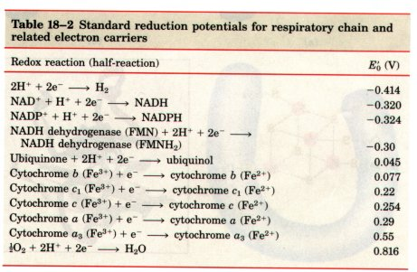
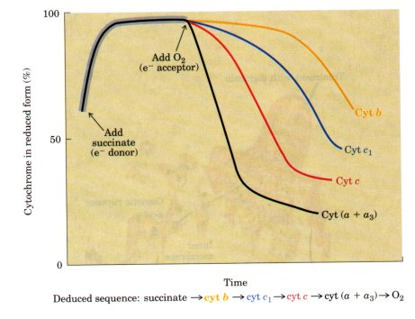
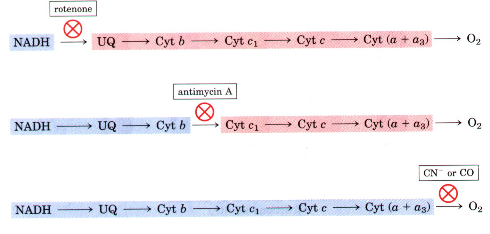
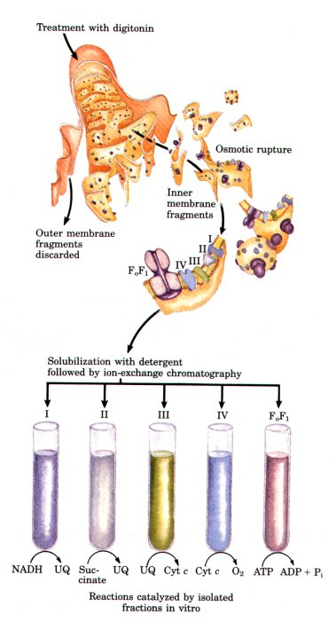
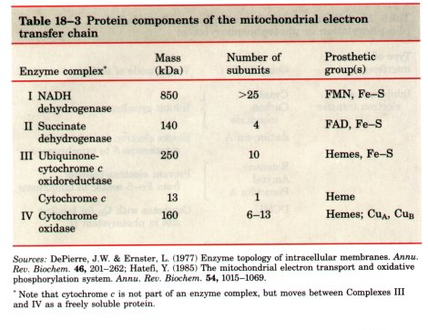
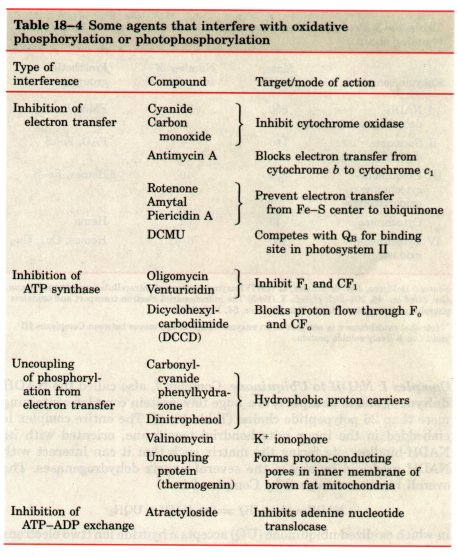
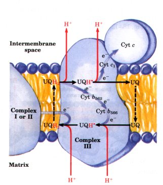
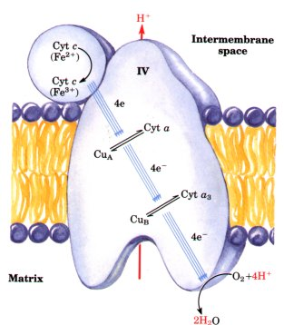
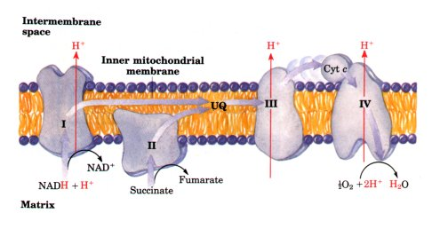

In the overall reaction catalyzed by the mitochondrial respiratory chain, electrons move from NADH, succinate, or some other primary electron donor through flavoproteins, ubiquinone, iron-sulfur proteins, and cytochromes (nearly all of which are embedded in the inner membrane), and finally to O2. The sequence in which the carriers act has been deduced in several ways.
First, their standard reduction potentials have been determined experimentally (Table 18-2). One expects the carriers to function in order of increasing reduction potential, because electrons tend to flow spontaneously from carriers of lower E'0 to carriers of higher E0. The order of carriers deduced by this method is NADH, UQ, cytochrome b, cytochrome cl, cytochrome c, cytochrome a + a3.

Second, when the entire chain of carriers is reduced experimentally by providing an electron source but no electron acceptor (no O2), and then O2 is suddenly introduced into the system, the rate at which each electron carrier becomes oxidized (measured spectroscopically) shows, in favorable cases, the order in which the carriers function (Fig. 18-6). The carrier nearest O2 (at the end of the chain) gives up its electrons first, the second carrier from the end is oxidized next, and so on. Such experiments have confirmed the sequence deduced from standard reduction potentials.
Third, agents that inhibit the flow of electrons through the chain have been used in combination with measurement of the degree of oxidation of each carrier (Fig. 18-7). In the presence of O2 and an electron donor, carriers that function before the inhibited step are expected to become fully reduced, and those that function after the block should be completely oxidized. By using several inhibitors that block earlier or later in the chain, the entire sequence has been deduced; it is the same as predicted from the first two approaches. Fourth, gentle treatment of the inner mitochondrial membrane with detergents allows the resolution of four electron-carrier complexes, each representing a fraction of the entire respiratory chain (Fig. 18-8). Each of the four separated complexes has its own unique composition (Table 18-3), and each is capable of catalyzing electron transfer through a portion of the chain. Complexes I and II catalyze electron transfer to ubiquinone from two different electron donors: NADH (Complex I) and succinate (Complex II). Complex III carries electrons from ubiquinone to cytochrome c, and Complex IV completes the sequence by transferring electrons from cytochrome c to O2 (Fig. 18-8). |
 Figure 18-6 The sequence of electron carriers can be determined by the kinetics of their oxidation. Isolated mitochondria are incubated with a source of electrons (succinate in this case) but without O2. Electrons from succinate enter the respiratory chain (through FADH2), reducing each of the electron carriers almost completely. Using rapid and sensitive spectrophotometric techniques, the rate of oxidation of each carrier is determined immediately after introducing O2 into the system. The carriers closest to O2 (cytochromes a and a3) are oxidized first; the most distant carrier (cytochrome b) is oxidized last.  Figure 18-7 Determination of the sequence of electron carriers by the effects of inhibitors of electron transfer on the oxidation state of each carrier. In the presence of an electron donor and O2, each inhibitor causes a characteristic pattern of oxidized/reduced carriers: those before the block become reduced (blue), and those after the block become oxidized (red). |
 |
Figure 18-8 Resolution of functional complexes of the respiratory chain. The outer mitochondrial membrane is first removed by treatment with the detergent digitonin. Fragments of inner membrane are then obtained by osmotic rupture of the mitochondria, and the fragments are gently dissolved ix a second detergent. The resulting mixture of inner membrane proteins is resolved by ion-exchange chromatography into different complexes (I througl IV) of the respiratory chain, each with its unique protein composition (see Table 18-3), and the enzyme ATP synthase (sometimes called Complex V). The isolated Complexes I through IV catalyze transfers between donors (NADH and succinate), intermediate carriers (UQ and cytochrome c), and O2, as shown. ATP synthase, which is composed of peripheral (F1) and integral (F0) proteins (discussed later in this chapter), has only ATP-hydrolyzing ;ATPase), not ATP-synthesizing, activity in vitro. |

Complex I NADH to Ubiquinone Complex I, also called the NADH dehydrogenase complex, is a huge flavoprotein complex containing more than 25 polypeptide chains (Table 18-3). The entire complex is embedded in the inner mitochondrial membrane, oriented with its NADH-binding site facing the matrix such that it can interact with NADH produced by any of the several matrix dehydrogenases. The overall reaction catalyzed by Complex I is
NADH + H+ + UQ  NAD+ + UQH2
NAD+ + UQH2
in which oxidized ubiquinone (UQ) accepts a hydride ion (two electrons and one proton) from NADH and a proton from the solvent water in the matrix. The enzyme complex first transfers a pair of reducing equivalents from NADH to its prosthetic group, FMN (Fig. 18-9). The complex also contains seven Fe-S centers of at least two different types, through which electrons pass on their way from FMN to ubiquinone. Amytal (a barbiturate drug), rotenone (a plant product commonly used as an insecticide), and the antibiotic piericidin A all inhibit electron flow from these Fe-S centers to ubiquinone (Table 18-4).
Ubiquinol (UQH2, the fully reduced form; Fig. 18-2) diffuses in the membrane from Complex I to Complex III, where it is oxidized to UQ. The flow of electrons through Complex I to ubiquinone to Complex III is accompanied by the movement of protons from the mitochondrial matrix to the outer (cytosolic) side of the inner mitochondrial membrane (the intermembrane space), as described below.
| Figure 18-9 Path of electrons from NADH, succinate, fatty acyl-CoA, and glycerol-3-phosphate to ubiquinone (UQ). Electrons from NADH pass through a flavoprotein to a series of iron-sulfur proteins (in Complex I) and then to UQ. Electrons from succinate pass through a flavoprotein and several Fe-S centers (in Complex II) on the way to UQ. Glycerol-3-phosphate donates electrons to a flavoprotein (glycerol-3-phosphate dehydrogenase) on the outer face of the inner mitochondrial membrane, from which they pass to UQ. Acyl-CoA dehydrogenase (the first enzyme in β oxidation) transfers electrons to electron-transferring flavoprotein (ETFP), from which they pass via ETFP-ubiquinone oxidoreductase to UQ. |

Complex II Succinate to Ubiquinone
We encountered Complex II in Chapter 15 under a different name: succinate dehydrogenase; it is the only membrane-bound enzyme in the citric acid cycle (p. 457). Although smaller and simpler than Complex I, it contains two types of prosthetic groups and at least four different proteins (Table 18-3). One protein has a covalently bound FAD and an Fe-S center with four Fe atoms; a second iron-sulfur protein is also present. Electrons are believed to pass from succinate to FAD, then through the Fe-S centers to ubiquinone.
Other substrates for mitochondrial dehydrogenases also pass electrons into the respiratory chain at the level of ubiquinone, but not through Complex II. The first step in the β oxidation of fatty acyl-CoA, catalyzed by the flavoprotein acyl-CoA dehydrogenase (p. 486), involves transfer of electrons from the substrate to the FAD of the dehydrogenase, then to electron-transferring flavoprotein (ETFP), which inturn passes its electrons to ETFP-ubiquinone oxidoreductase (Fig. 18-9). This reductase, an iron-sulfur protein that also contains a bound flavin nucleotide, passes electrons into the respiratory chain by reducing ubiquinone in the inner mitochondrial membrane.
In Chapter 16 we noted that glycerol released in the degradation of triacylglycerols is phosphorylated, then converted into dihydroxyacetone phosphate by glycerol-3-phosphate dehydrogenase (see Fig. 16-4). This enzyme is a flavoprotein located on the outer face of the inner mitochondrial membrane, and like succinate dehydrogenase and acyl-CoA dehydrogenase it channels electrons into the respiratory chain by reducing ubiquinone (Fig. 18-9). The important role of glycerol-3-phosphate dehydrogenase in shuttling reducing equivalents from cytosolic NADH into the mitochondrial matrix is described later (see Fig. 18-26).
| Complex III Ubiquinone to
Cytochrome c Complex III, also called cytochrome
bc1 complex or ubiquinone-cytochrome c
oxidoreductase, contains cytochromes b562 and
b566, cytochrome c1, an ironsulfur protein, and at least
six other protein subunits (Table 18-3). These proteins
are asymmetrically disposed in the inner mitochondrial
membrane; cytochrome b spans the membrane, and both
cytochrome cl and the iron-sulfur protein are on the
outer surface. The switch between the two-electron
carrier ubiquinone and the one-electron carriers
(cytochromes b562, b566, C1, and c) is accomplished in a
series of reactions called the Q cycle (Fig. 18-10).
Although the path of electron flow through this segment
of the respiratory chain is complicated, the net effect
of the transfer is simple: UQH2 is oxidized to UQ and
cytochrome c is reduced. Complex III functions as a proton pump; as a result of the asymmetric orientation of the complex, protons produced when UQH2 is oxidized to UQ are released to the intermembrane space, producing a transmembrane difference of proton concentration-a proton gradient. The importance of this proton gradient to mitochondrial ATP synthesis will soon become clear. |
 Figure 18-10 The path of electrons through Complex III probably involves a "Q cycle" such as that shown here (blue arrows). The broken arrows represent diffusion of UQH2 (ubiquinol) or its oxidized form UQ across the membrane. Notice that the electron transfers between cytochromes and ubiquinone are one-electron reactions, producing the semiquinone radical as an intermediate (see Fig. 18-2). The net effects of the reactions here are (1) movement of electrons from UQH2 to cytochrome c, and (2) movement of protons from the inside (matrix) to the outer (cytosolic) side of the inner membrane (the intermembrane space). (For simplicity the oxidation-reduction cycles of the individual cytochromes are not shown here.) |
| Complex IV: Reduction of O2 Complex
IV, also called cytochrome oxidase, contains cytochromes
a and a3. These cytochromes consist of two heme groups
bound to different regions of the same large protein that
are therefore spectrally and functionally distinct.
Cytochrome oxidase also contains two copper ions, CuA and
CuB, that are crucial to the transfer of electrons to O2.
This complex enzyme has evolved to carry out the
four-electron reduction of O2 (Fig. 18-11) without
generating incompletely reduced intermediates such as
hydrogen peroxide or hydroxyl free radicals-very reactive
species that would damage cellular components. The flow of electrons from cytochrome c to O2 through Complex IV causes net movement of protons from the matrix to the intermembrane space; Complex IV functions as a proton pump that contributes to the proton-motive force. Electron Transfer to O2 Is Highly ExergonicThe energetics of electron transfer (oxidation-reduction) reactions were described in Chapter 13. In oxidative phosphorylation, two electrons pass from NADH through the respiratory chain to molecular oxygen: NADH + H+ + ½ O2 For the redox pair NAD+/NADH, E0 is -0.320 V, and for the pair O2/H2O, E0 is 0.816 V. The ΔE'0 for this reaction is therefore +1.14 V, and the standard free-energy change (p. 389) is ΔG°' = -nFΔE'0 = (-2)(96.5kJ/V.mol)(1.14V)=-220kJ/mol |
 Figure 18-11 Path of electrons through Complex IV. CuA (Cu2+) and cyt a (Fe2+) form one bimetallic redox center capable of accepting two electrons; CuB and cyt a3 constitute a second two-electron redox center. The detailed path of electron flow between cyt c and O2 is not known with certainty; apparently electrons first move from cyt c to CuA or cyt a, which are in rapid redox equilibrium with each other. This bimetallic center then donates electrons to CuB and cyt a3, also in redox equilibrium, which in turn donate the electrons that reduce O2 to H2O. The four protons used in the reduction of O2 to H2O are taken up from the matrix side of the inner mitochondrial membrane. Consequently, cytochrome oxidase pumps protons out of the matrix as electrons are transferred to O2. |
A similar calculation for succinate oxidation shows that electron transfer from succinate (Eo for fumarate/succinate = 0.031 V) to O2 has a smaller, but still negative, standard free-energy change of about -152 kJ/mol. .
In the mitochondrion, the combined action of Complexes I, III, and IV results in the transfer of electrons from NADH to O2; Complexes II, III, and IV act together to catalyze electron transfer from succinate to O2 (Fig. 18-12). The actual free-energy changes in respiring mitochondria are not the same as the standard free-energy changes, because reactants are not present at 1 M concentrations. However, it is clear from experimental measurements that under cellular conditions, the mitochondrial oxidation of NADH or succinate releases more free energy than the 51.8 kJ/mol required to drive the synthesis of ATP from ADP and Pi (see Box 13-2).
Figure 18-12 Summary of the flow of electrons and protons through the four complexes of the respiratory chain. Electrons reach UQ via Complexes I and II. UQHz serves as a mobile carrier of electrons and protons. It passes electrons to Complex III, which passes them to another mobile connecting link, cytochrome c. Complex IV transfers electrons from reduced cytochrome c to O2. Electron flow through Complexes I, III, and IV is accompanied by proton flow from the matrix to the intermembrane space. Recall that electrons from fatty acid β oxidation can also enter the respiratory chain through UQ (see Figs. 16-9 and 18-9).



 H2O + NAD+
H2O + NAD+